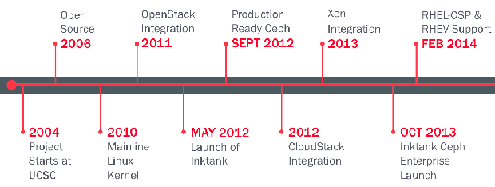
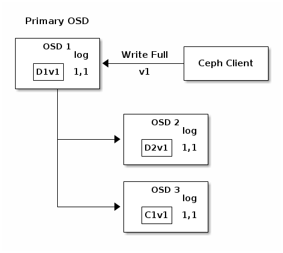
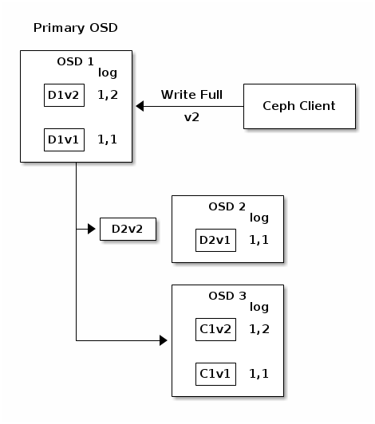
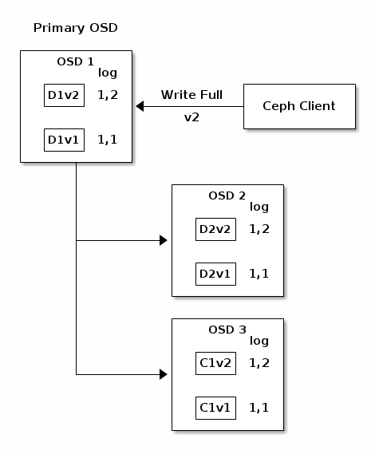

Ceph¶
The future of Storage!
Ceph Intro¶
Ceph can uniquely deliver object, block and file storage in one unified system.
start since Jun 2004, write w/ C++, now adopted by RedHat
provide block storage other than gluster
applications: OpenStack/CloudStack/OpenNebula/Hadoop/Mesos
urls : home / get ceph / quick start / docs / mailing list / irc / git repo /
peopele are mostly build ceph within private cloud using debian servers [1]
- advantages
- CRUSH make sure the consistency
- Unified storage architecture
- other features: scalability/replication/balance/rolling upgrade/multi-pool/snapshots
- disadvantages
- c++ & python, slower and simpler than c
- doubel input, long IO path and bad support for fast storage deviecs(SSD/PCIe SSD/NVRAM)
- bad cephfs no big move recently
- write-all-read-one will cause bad performance when writing w/ disk failure
- supervised by redhat and contributed mostly by them
- multiple OSDs in a single host, if host down, tons of PG will be affecte
- upper limited of single cluster
- rgw index pool bad performance, even w/ SSD
ceph releases¶
Ceph starts at UCSC, OpenSrc at 2006, Developed by InkTank
| Times | Dumpling LTS | Emperor | Firefly LTS | Giant | Hammer LTS | Infernalis |
|---|---|---|---|---|---|---|
| First release | Aug 2013 | Nov 2013 | May 2014 | Oct 2014 | Apr 2015 | Nov 2015 |
| Est. retirement | Mar 2015 | Jan 2016 | Nov 2016 | Jun 2016 | ||
| Act. retirement | May 2015 | May 2014 | Apr 2015 |
features¶
- thin provisioning
- copy on read for librbd
- clustered MDS – diff MDS will cover diff subtree of CephFS
- health check – MON will ping osd nodes periodly, and OSDs also can report it’s and peer’s status to MON
- scrubing – daily light check file zize & attr. weekly deep check with checksum
- no centralize access point – client contact Primary OSD directly
filesystem¶
- current only supports XFS, brtfs, and ext4
because OSD depends on the Extended Attributes(XATTRs) of underlying FS for various forms of internal object state and metadata
- btrfs – now under great progrss, but not stable. will be the future of ceph, not bound the total xattr size.
- its a CoW fs, supports snapshots that are writeable.
- supports file creation timestamps & checksums that verify metadata integrity. can detect bad copis & recover w/ good copies
- incorporates multi-device mgmt into fs, which enable heterogeneous disk storage infrastructure
- support transparent compression and other features.
xfs – stable, has a relative large limit of xattr size (64KB), should be first option.
ext4 – stable, but small xattr size.
- xfs, brtfs and ext4 are better than ext3,
- they are journal fs. will be much eariser to recover from cursh or power outages.
pg states¶
- creating – pg under creating
- active – can process r/w or other operations
- clean – make the full reps of objs
- down – the pg is offline
- replay – waiting for client to replay op after an OSD crashed
- splitting – splitting 1 pg into multi pg
- scrubbing – cheking for inconsistencies
- degraded – not have enough reps
- inconsistent – wrong size, missing, etc.
- peering – OSDs not reached a consensus
- repair – repairing inconsistencies
- recovering – migrating/synchronizing objs and their reps
- backfill – scanning and synchronizing the entire pg from the logs for recent op. (special recovering)
- wait-backfill – wait for backfill
- backfill-toofull – waiting because the dest OSD is over full ratio
- incomplete – have unhealthy copies, can solve by start failed OSD to temporary meet the condition of min_size.
- stale – pg is in an unknow state
- remapped – pg is temporarily mapped to a diff set of OSDs
- undersized – pg have fewer copies than configured pool rep level
- peered – pg has peered, but not reach min_size
Architecture¶
Glossariy¶
| name | abbr. | description |
|---|---|---|
| Reliable Autonomic Distributed Object Store | RADOS | self-healing,self-managing, inteligence storage include(OSD&MON) |
| RADOS Gateway | RADOSGW/RGW | manage object store |
| RADOS Block Device | RBD | include KRBD for CephFS, and LIBRBD for dirct use of block device |
| Ceph FileSystem | CephFS | a shared filesystem |
| Ceph Release Candidate | Ceph RC | will be released but under testing and debuging |
| Monitor | MON | |
| Object Storage Device | OSD | |
| Metadata Server | MDS | |
| Controlled Replication Under Scalable Hash | CRUSH | Core Algorithm of Ceph |
| Paxos/Quorum | algorithm make sure the consistency of distribution system | |
| Cephx | authentication protocol, operates like kerberos, w/o SPoF | |
| Pool | logical partitions for storing objs | |
| Placement Group | PG | |
| Acting Set | Ceph OSD Daemons that are currently responsible for the PG | |
| Up Set | OSDs in the Acting Set is up | |
| Primary OSD | OSD in a PG, that client will talk w/ | |
| Cache Tier | provides ceph clients w/ better I/O performance |
Architecture¶
Cephx¶
It helps ceph to authenticate users and daemons, but not address data encription in transport.
- both client and monitors have a copy of clients’s key
{kind=link}
- user creation
- client.admin user invokes
ceph auth get-or-crete-keyfrom cli, to generate a username and secret key. - ceph’s auth subsystem gen the uname&key, store them in MONs and transmit back to client.admin
- client.admin user invokes

- auth w/ MON
- client passes in the uname to MON
- MON gen a session key and encrypts it w/ client’s key.
- MON sent session key to client
- client request a ticket signed w/ previous session key
- MON gen a ticket encrypts w/ client’s key.
- client decrypts encrypted ticket
- ticket will can be expired
- this ticket will be shared w/ OSDs, MDSs and MONs
- client comm w/ ceph nodes by signing this ticket on each msg.
Erasure Coding¶
Interrupted Full Writes¶
- last_compelete – a pointer to locate data positions
- Data chunck – stroage 1/k part of data
- Coding chunck – storage erasure coding data
- WRITE FULL – payload is to replace the object entirely instead of overwriting a portion of it.
- Primary OSD – responsible for storing chunks in addition to handling write operations and maintaining an authoritative verion of PG log to reflect the changes.
In the following diagram, k=2 and m=1, D1v1 means Data chunck 1 version 1, similarily C1v1 means Coding chunck number 1 version 1.
  {kind=link}
{kind=link}
{kind=link}
{kind=link}
{kind=link}
{kind=link}